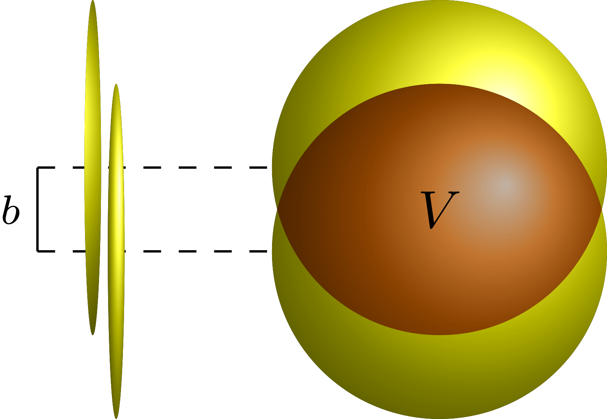
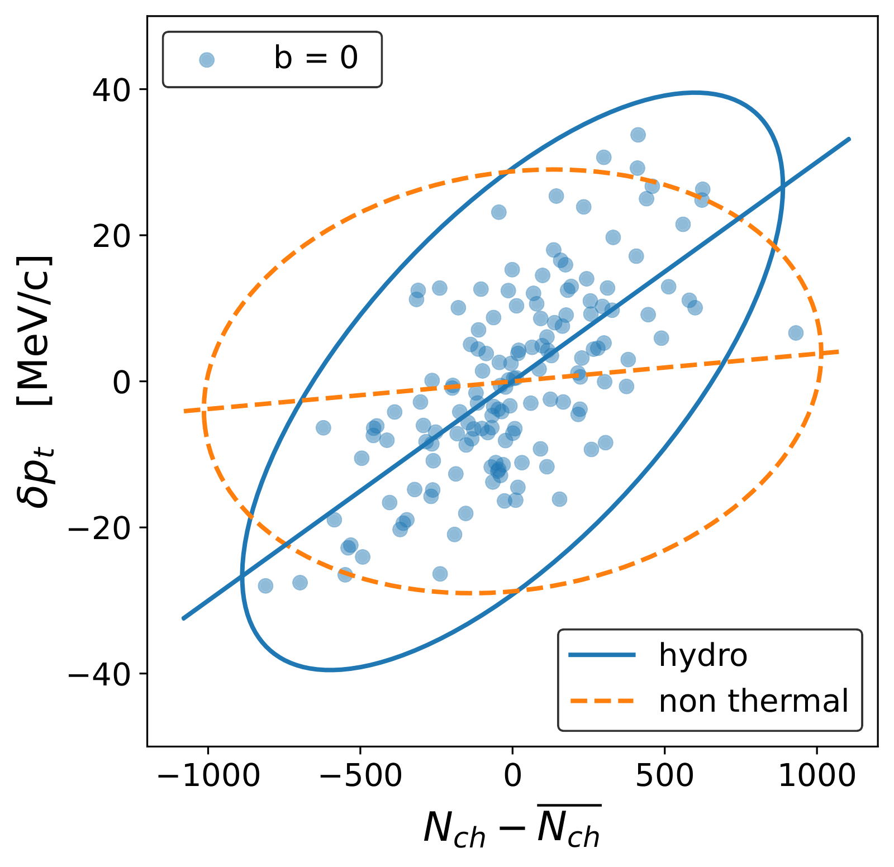

ATLAS momentum fluctuations reveal thermalization at the femtoscale
Thermalization at the femtoscale seen in high-energy Pb+Pb collisions
R. Samanta, S. Bhatta, J. Jia, M. Luzum, J.-Y. Ollitrault, Phys. Rev. C 109, L051902 (2024)
My role: co-author.
In one paragraph
ATLAS found that event-to-event fluctuations of the momentum per particle drop steeply in the most central Pb+Pb collisions. We explain why. With the same number of particles, a less central collision has a smaller volume, so its fluid is denser and hotter and gives more momentum per particle. This is what thermalization predicts.
1The gap: a sharp drop with no explanation
Each collision has an impact parameter b: the distance between the centres of the two nuclei. A smaller b means a larger overlap region, where the hot matter forms.

ATLAS measured how much the momentum per particle, [pT], varies between events with the same particle count N. The variance falls by about a factor of 2 over a narrow range of N, near 3700. Models of independent nucleon-nucleon collisions, such as HIJING, do not show this.
2What we compute: how density sets the momentum per particle
In a thermalized fluid, a higher density means a higher temperature, and so more momentum per particle. In a relativistic fluid, density and temperature go together, because heat can create new particles.
Experiments cannot measure b. They sort events by N. At fixed N, b still varies a little from event to event. A larger b means a smaller volume, so the same particles are packed more densely.
We model the joint distribution of N and [pT] at each b as a tilted two-dimensional Gaussian. We reconstruct how b is distributed at each N from the measured N distribution. Three parameters are fitted to the ATLAS data.
3What we observe: b fluctuations explain the drop
Hydrodynamic simulations at b = 0 show that events with more particles have higher [pT]. A model without interactions shows a correlation about 10 times weaker.

At fixed N, several tilted clouds from different b overlap at different heights. This adds spread. Beyond the "knee", the average N at b = 0, only b ≈ 0 remains, and this extra spread disappears.

The same model also describes the data when events are sorted by forward transverse energy ET instead of N, a non-trivial check.
4What we conclude: the drop is a sign of thermalization
The variance of [pT] at fixed N has two parts: an intrinsic part, present even at fixed b, and a part from b varying. The second part vanishes in ultra-central collisions, which produces the steep drop.
The size of the drop is set by how strongly [pT] rises with density. The data therefore show that the momentum per particle increases with density, as expected for a thermalized fluid only about ten femtometres across.
5What comes next
- Mean [pT] in ultra-central collisions: the model predicts a small rise of the average [pT] above the knee. CMS has observed this rise and used it to extract the speed of sound of the plasma.
- Higher cumulants: the skewness of [pT] fluctuations helps separate the b-driven and intrinsic parts.
- Deformed nuclei: their random orientations add further fluctuations of both N and [pT].
All plots on this page are reproduced from that paper. Animations are simplified illustrations made for this page, not results of the paper.